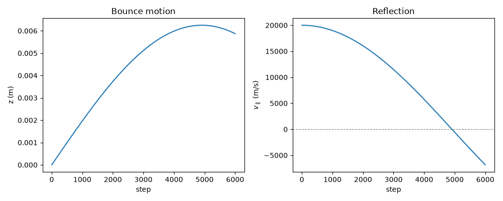
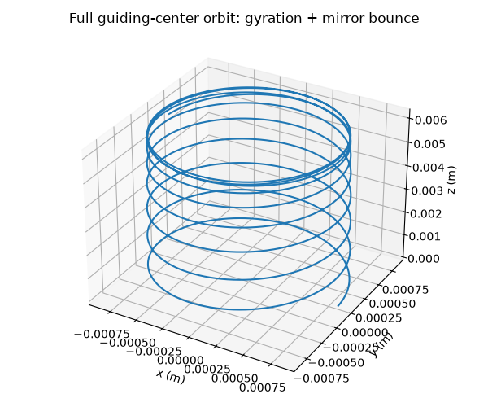

Note
Go to the end to download the full example code.
Guiding-center drifts and magnetic mirror confinement#
Rather than integrate every fast gyration of a charged particle around a field line, plasma theorists of the 1950s (with foundational contributions from Alfven and later systematized by Northrop) showed that the orbit separates cleanly into a rapid gyration plus a slow drift of the gyration’s center – the guiding center – driven by any force or field gradient perpendicular to \(\mathbf{B}\). The gyration itself conserves an adiabatic invariant, the magnetic moment \(\mu=mv_\perp^2/2B\), to very high accuracy whenever the field changes slowly compared to the gyration period; as a particle’s guiding center drifts into stronger field, \(\mu\) conservation forces \(v_\perp\) to grow at the expense of \(v_\parallel\). That conversion is the reaction of a parallel mirror force,
decelerating the particle along the field line \(\ell\) as it
approaches a region of stronger \(B\) – the mechanism behind
magnetic mirror confinement, and the equation of motion
magnetic_mirror_bounce() integrates directly (with \(\mu\)
held fixed at its initial value) between the mirror’s two throats.
exb_drift(),
grad_b_drift(), and
curvature_drift() give the
guiding-center drift velocities directly;
magnetic_moment() and
mirror_force() implement the
invariant and the resulting bounce motion in
magnetic_mirror_bounce().
import matplotlib.pyplot as plt
import numpy as np
import physicskit as pk
A parabolic mirror field profile#
Weak at the midplane (z=0), peaking at the throats.
B_func = lambda z: 1.0 + 4.0 * (z / 0.05) ** 2
Launch a proton from the midplane with enough perpendicular velocity that mu-conservation reflects it before the throat.
z_hist, v_par_hist = pk.plasma.magnetic_mirror_bounce(z0=0.0, v_par0=2e4, v_perp0=8e4, m=pk.plasma.MP, B_func=B_func, steps=6000)
Plot the bounce: z(t) turns around, v_par(t) changes sign exactly at the reflection point – the mirror force decelerating v_par as mu conservation converts it into v_perp.
fig, axes = plt.subplots(1, 2, figsize=(10, 4))
axes[0].plot(z_hist)
axes[0].set_xlabel("step")
axes[0].set_ylabel("z (m)")
axes[0].set_title("Bounce motion")
axes[1].plot(v_par_hist)
axes[1].axhline(0.0, color="gray", linestyle="--", linewidth=0.8)
axes[1].set_xlabel("step")
axes[1].set_ylabel(r"$v_\parallel$ (m/s)")
axes[1].set_title("Reflection")
fig.tight_layout()
plt.show()

Reconstructing the full 3D guiding-center orbit#
The two panels above show only the slow guiding-center motion along
the field line; the module’s whole premise is that this is one half of
a full orbit that also gyrates rapidly around \(\mathbf{B}\). Mu
conservation fixes that fast gyration’s amplitude and phase directly
from the guiding-center history already computed: \(v_\perp(z)\)
from magnetic_moment() held
fixed at \(\mu\), the local gyroradius from
larmor_radius(), and the local
gyro-phase accumulated from
cyclotron_frequency().
Superposing that reconstructed gyration on the bounce shows the actual
helical orbit a proton follows – tightening into a fast, small-radius
corkscrew near the throats where B is largest, and loosening near the
midplane – instead of only its guiding center’s 2D projection.
B_hist = B_func(z_hist)
mu = pk.plasma.magnetic_moment(8e4, pk.plasma.MP, B_func(0.0))
v_perp_hist = np.sqrt(np.clip(2 * mu * B_hist / pk.plasma.MP, 0.0, None))
dt_bounce = 1e-10 # magnetic_mirror_bounce's default time step, used above
omega_c_hist = pk.plasma.cyclotron_frequency(pk.plasma.QE, pk.plasma.MP, B_hist)
gyrophase = np.cumsum(omega_c_hist) * dt_bounce
r_L_hist = pk.plasma.larmor_radius(v_perp_hist, pk.plasma.QE, pk.plasma.MP, B_hist)
pos_hist = np.column_stack([r_L_hist * np.cos(gyrophase), r_L_hist * np.sin(gyrophase), z_hist])
fig = plt.figure(figsize=(6, 5))
ax = fig.add_subplot(projection="3d")
pk.plasma.plot_particle_orbit_3d(pos_hist, ax=ax)
ax.set_title("Full guiding-center orbit: gyration + mirror bounce")
fig.tight_layout()
plt.show()

Total running time of the script: (0 minutes 0.091 seconds)